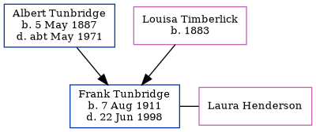

Frank Albert Tunbridge 1911 - 1998
[ Home ] | [ Calendar ] | [ Surnames Index ] | [ Errors ] | [ Family History ]A building society clerk and the eldest of 3 children of Albert Tunbridge (a coach painter) and Louisa Timberlick, Frank Tunbridge, the second cousin once-removed on the father's side of Nigel Horne, was born in Acton, London, England on 7 Aug 19111,2,3,4. He married Laura Henderson in Marylebone, London, England around Feb 19426.
During his life, he was living at 111A Bollo Bridge Road in Acton on 19 Jun 19211 and in 19337 (the same place as his mother had been living on 19 Jun 1921) and at 192 Southfield Road in Acton on 29 Sept 19392 - less than a mile from his father Albert who was living at 192 Southfield Road in Acton.
He died on 22 Jun 1998 in Bexley, London, England4,5 and was buried in Greenwich, London, England on 7 Jul 1998 (a drizzly day).
Parents
- Albert was born on 5 May 1887
- Louisa May was born in 1883
Citations
- 1921 Census Of England & Wales - Findmypast (was age 9 and the son of the head of the household)
- 1939 Register - Findmypast (was the son of the head of the household)
- England & Wales births 1837-2006 - Findmypast
- England & Wales deaths 1837-2007 - Findmypast
- England & Wales Government Probate Death Index 1858-2019 - Findmypast
- England & Wales Marriages 1837-2005 - Findmypast
- Electoral Roll
Media
England & Wales births 1837-2006 - BMD/B/1911/3/AZ/001382/038
England & Wales deaths 1837-2007 - BMD/D/1998/6/82841513
England & Wales marriages 1837-2005 - BMD/M/1942/1/AZ/001312/113
England & Wales Government Probate Death Index 1858-2019 - GBOR/GOVPROBATE/B/1996-1998/00444723
1939 Register - TNA-R39-0670-0670G-015-26
1921 Census of England & Wales - GBC/1921/RG15/06383/0021/03
Family Tree
Map
Generated by ged2site. Last updated on Jul 3, 2024
Known Issues
Burial date (7 Jul 1998) has no citations